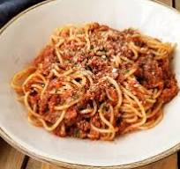

Turkey Spaghetti

The easiest and most delicious Turkey Spaghetti ever!
Using simple ingredients that you have in your fridge/pantry. Done in under 30 minutes. Best spaghetti meat sauce recipe ever.
Ingredients
- Ground Turkey
- Tomato Sauce
- Onion
- Garlic
- Carrot
- Seasonings
- Thin Spaghetti
- Balsamic Vinegar
- Parmesan Cheese
- Olive Oil
Steps
- Get a Large Saucepan and cooking spoon
- Cutting Board and Chefs knife
- Cook spaghetti noodles according to package instructions. Drain and set aside
- Heat oil in large saucepan over medium heat. Add carrot and onion to the pan
- Drizzle balsamic vinegar over veggies.
- Cover and cook for a few minutes until veggies are tender, stirring occasionlly.
- Add garlic and ground turkey to the veggies and cook until turkey is fully cooked through, about 10 minutes.
- Stir in tomato sauce, seasonings and parmesan cheese.
- Cover and cook over a vey low simmer for another 10-15 minutes, stirring occasionally.
- Serve Turkey Spaghetti Sauce over cooked spaghetti.
- Enjoy!